UltraBasic and Extended Comfort
Designing strategic user experiences for the launch of two product offerings.
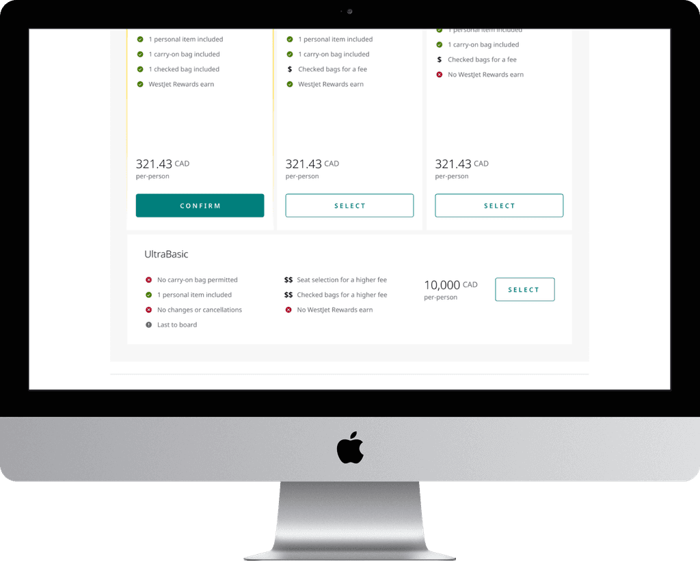
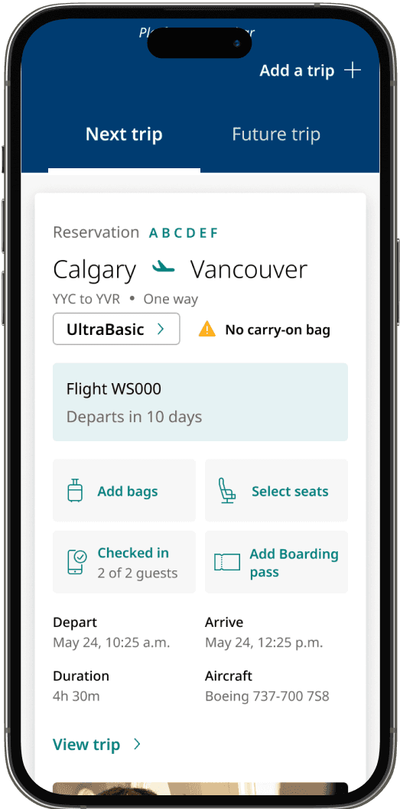
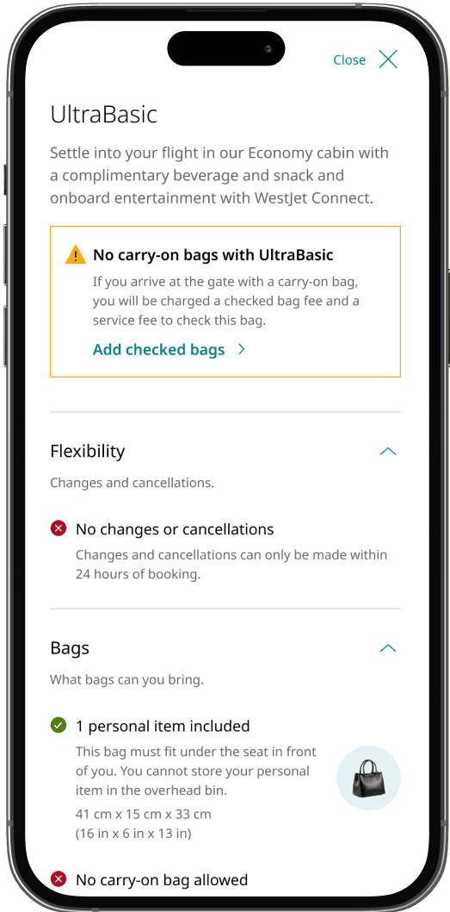
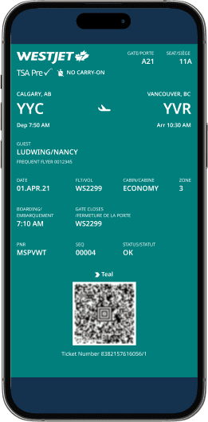
TLDR
WestJet launched two product offerings to improve operations and revenue. We designed the digital experience from booking to mobile app in six months, required coordination across over 100 employees.
We created three design principles in order to align everyone working on the project. To meet the quick timelines, we grounded our decisions with guest sentiment research and user testing rather than opinion alone.
We delivered the end-to-end digital experience and product strategy, creating over 50 features across six products. UX decisions saved the company millions of dollars and we continue to optimize for revenue.
Background
WestJet launched UltraBasic’s “No carry-on bag” policy as an attempt to alleviate stress with bag congestion at the gate, which often caused flight delays. The business also launched Extended Comfort with it, a new seat offering with revenue opportunity. However, the new offerings came with its own challenge; confusing fare restrictions, new baggage rules, and price transparency. I led the design of the end-to-end digital experience from booking to check-in.
The challenge
This project had some major challenges: the six month timeline, satisfying numerous stakeholders at once, and breaking down confusing policies into digestible experiences. The digital launch involved coordinating across nine product teams, six digital platforms, and over 100 employees.
Challenge #1
Two products in six months
With extremely tight timelines, there were heavy technical constraints on what we would be able to build.
Challenge #2
Designing by committee
Many stakeholders had strong opinions about what the experience needed to be. There was high risk creating designs that satisfied everyone, but pleased no one.
Challenge #3
Confusing airline policies
Guests needed clarity on what was included with their flights like what bags they could and could not bring, which varied by route and seat.
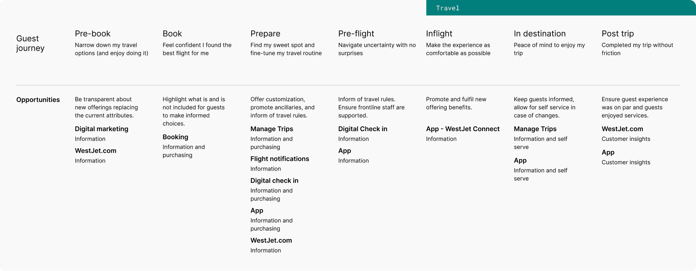
The Discovery
Understanding Current Sentiment
To ground our design decisions in user insights, we initiated the discovery phase with comprehensive user research. We conducted two baseline tests: one to gauge guest sentiment towards the current Basic fare experience and another to identify the attributes guests valued most.
These insights informed both the design and the communication strategy, ensuring that we addressed the existing pain points while creating a more intuitive and guest-friendly experience.
Research insight #1
Unclear fare rules
Guests appreciated the simplicity of the current booking flow but often found the fare rules unclear. Key pain points included difficulty in understanding baggage policies and frustration with inconsistent experiences across platforms.
Research insight #2
What guests care about
Top general categories were change/cancel, baggage, and then seat selection. To meet operational goals, we swapped the order of change/cancel with baggage. When upgrading, guests cared most about getting extra legroom.
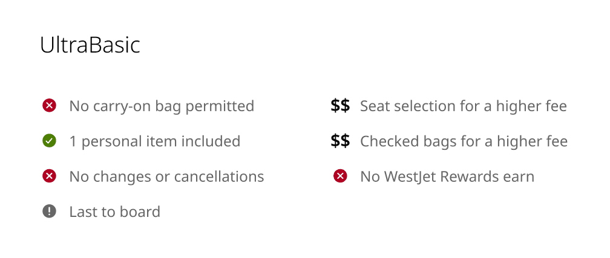
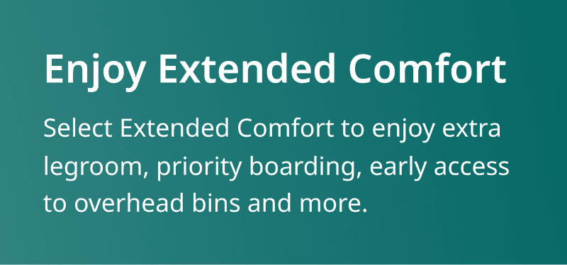
The Vision
Developing Design Principles
To align with WestJet’s business strategy and deliver a user-centred experience, we established three key design principles — upsell where it matters, guest education, and consistency in the experience. These principles guided the development of over 50 features across six products:
Upselling where it matters
Understanding that UltraBasic guests are highly price-sensitive, we strategically placed upsell opportunities at key decision points to maximize impact and assist guests in making informed choices without feeling overwhelmed.
Guest education
To support operational goals, we prioritized clear, repeated communication of fare rules and baggage allowances — reinforcing what guests had bought and reducing the confusion that was driving calls to frontline and call-centre staff.
Consistency across every touchpoint
As the only team overseeing the guest journey end-to-end, we treated look and feel, interactions, and information as one connected system — extending past digital screens to the airport and in-flight experience, so guests got the same story everywhere and the contact centre took less of the load.
Experience A
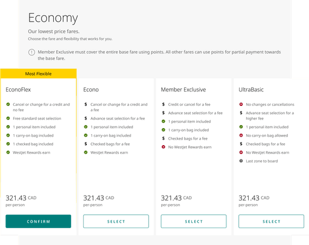
Experience B
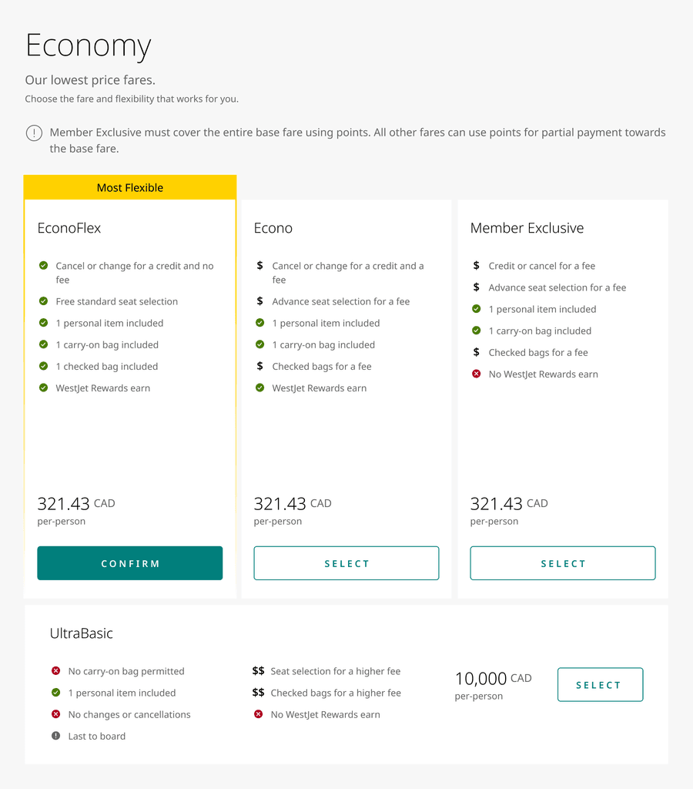
Experience A
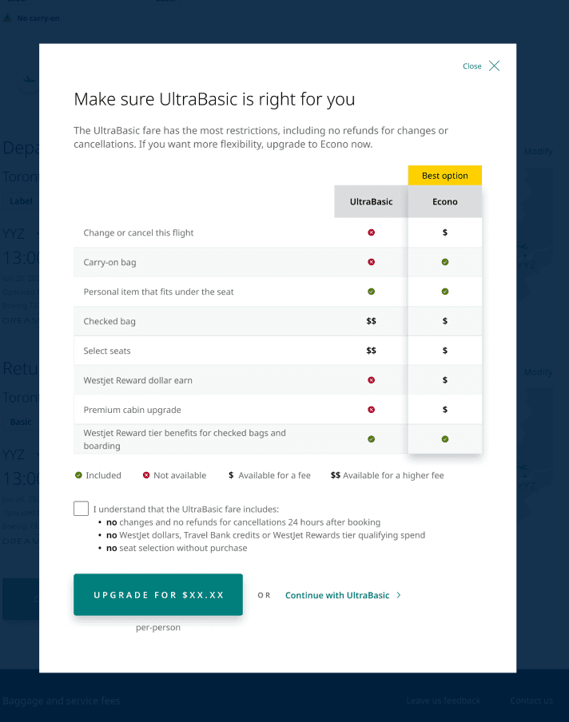
Experience B
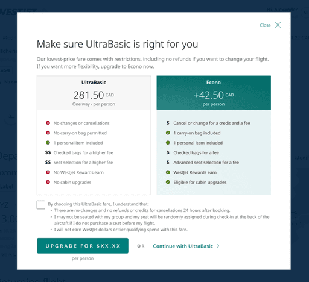
Booking
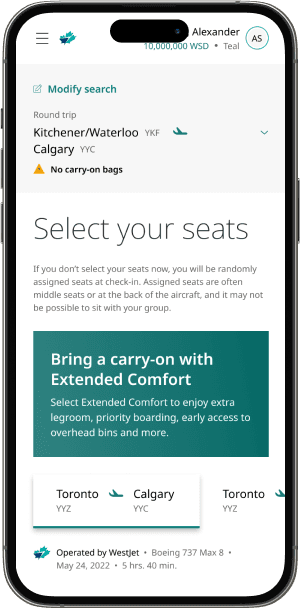
Manage Trips
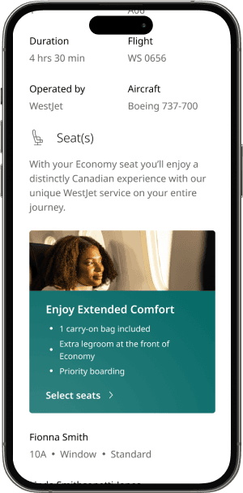
Emails
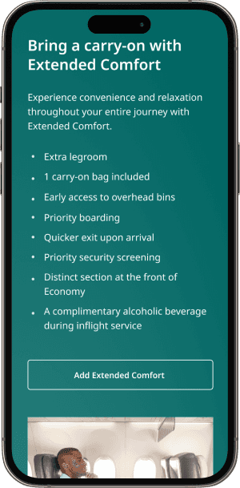
Check-in
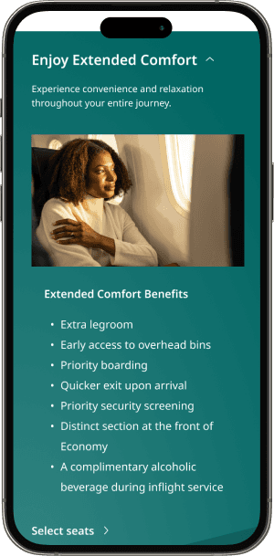
Mobile app
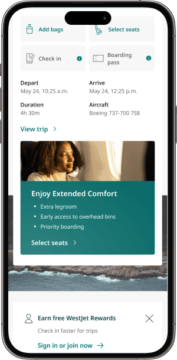
Key Decisions
Two calls mattered more than the rest of the feature list — one against guest research, one against a direction already in motion.
Order fare attributes by guest priority vs. operational priority
Guest research ranked change/cancel above baggage in what mattered most, so ordering the fare attribute list to match that ranking was the direct read of the data.
We swapped the order — surfacing baggage before change/cancel — to meet WestJet's operational goal of reducing bag congestion at the gate.
The attribute order no longer purely mirrored the guest-research ranking, in exchange for reinforcing the exact operational behaviour — earlier bag handling — the new fare structure existed to drive.
Ship the proposed direction vs. flag it and re-test
A design direction was already proposed and moving forward — the easier path was to build it as scoped rather than reopen a decision stakeholders had aligned on.
Design strategy flagged concerns that the proposed solution would be a poor guest experience, and we used data to make the case for changing direction instead.
Pushing back on a direction already in motion, with the friction that involves — in exchange for avoiding an estimated $35M in flight revenue and $2M in ancillary revenue loss.
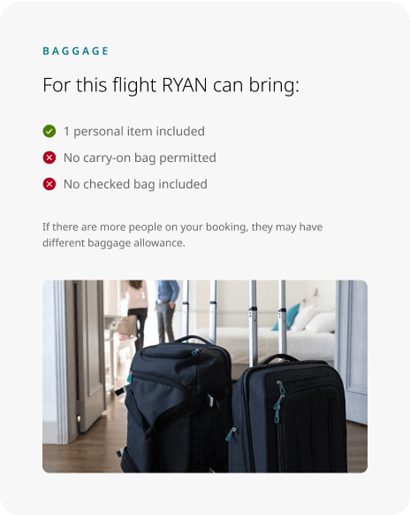
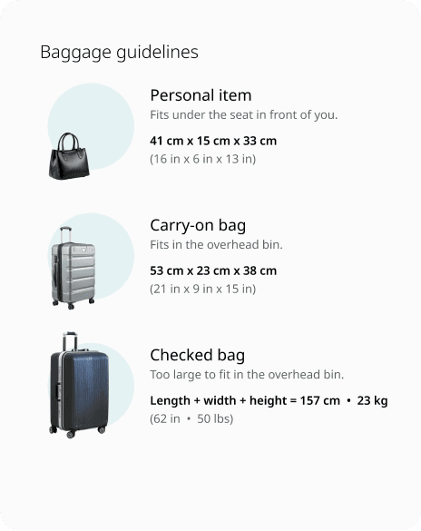
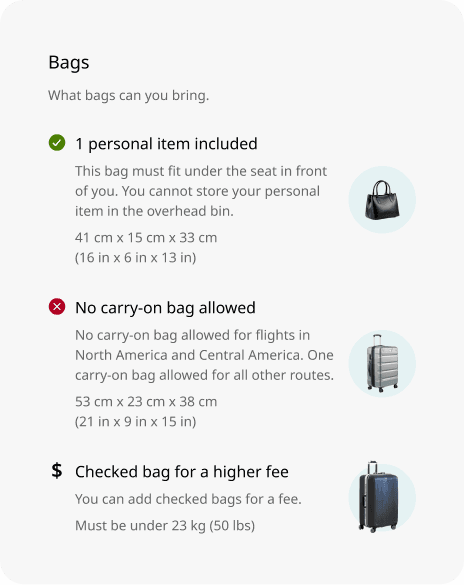
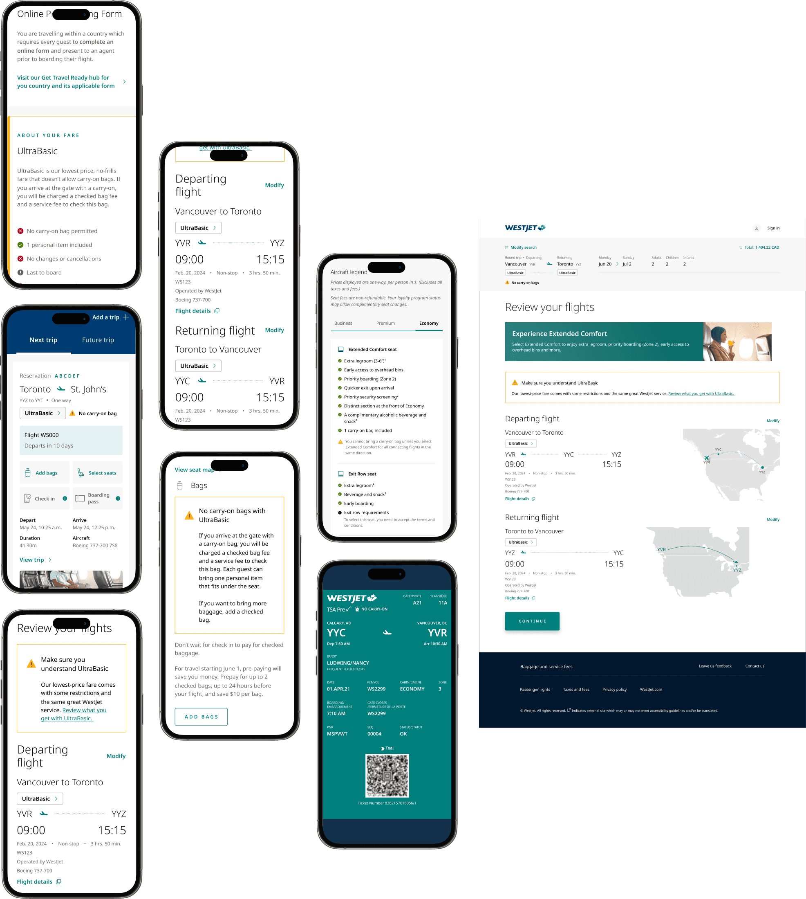
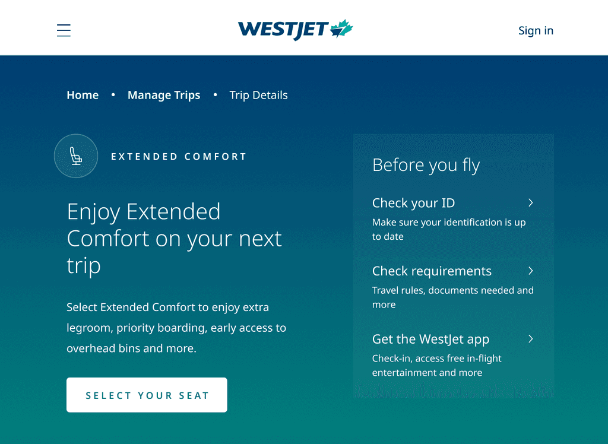
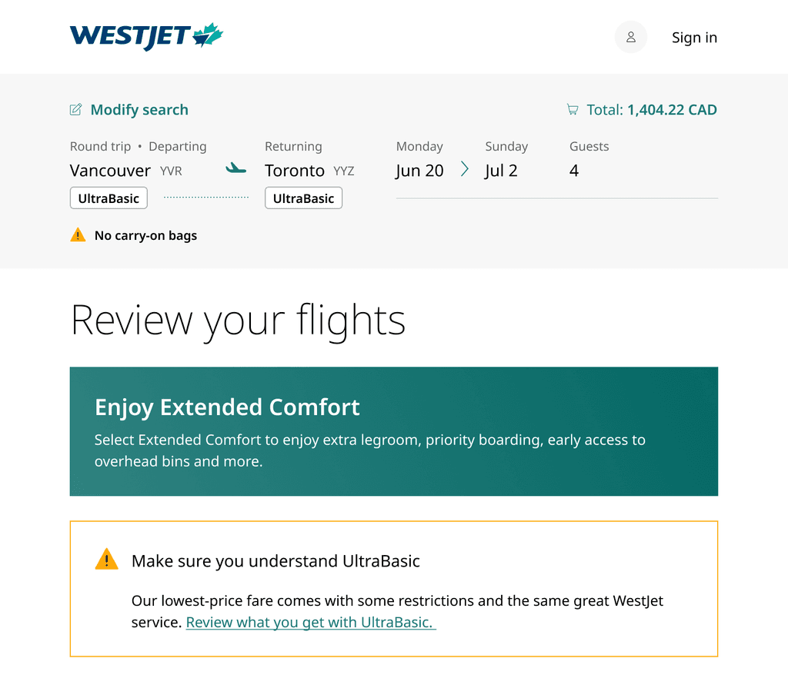
Impact
Our refreshed design flows helped guests easily understand the product offerings, select the ancillaries they valued, and pay only for what they truly needed. Post-launch testing backed that up directly — updated design patterns lifted Economy buy-up by almost 5%, adding over $3M in flight revenue and $400K in ancillary revenue, on top of the $35M and $2M in losses avoided by pushing back on a weaker proposed direction. The result was a launch that welcomed price-sensitive guests without leaving revenue on the table.
Takeaways
Leading a team
This was my first time leading a team, especially one comprised of all contractors. It was chaotic at the start, onboarding everyone to understand complex products. Of the six months, we spent the first one deep diving into different products, understanding the opportunities and constraints. Taking full ownership of design also meant providing good feedback to the design team, ensuring that we aligned with existing standards. Through all this, I learned how to manage, organize, and prioritize design requirements to keep the team on track and on time.
Design debt and streamlining process
This project was the largest initiative we undertook since switching to Figma. The scale and scope posed challenges, such as Figma files becoming too large to load and Zeplin being difficult to navigate. To overcome these obstacles, we established a source of truth file for product owners to reference, created an archival system for managing design iterations, and optimized component creation. We organized pages to make them easily navigable by all team members, ensuring efficiency and clarity throughout the design process.
Stakeholder management
With the scale of the project, there were many stakeholders to juggle. From individual Product Owners to VPs, everyone had wants and needs, and strong ones. I had two major takeaways from this process — be empowered to flag concerns and speak the stakeholders language. With so many questions about the offerings, I ran a workshop with key stakeholders to do a Q&A. This ended up being a major help and further aligned the team in our vision. When presenting designs to VPs, speaking in terms of capturing revenue, improving operations and mitigating negative brand reception sped up our approvals as leadership understood our thinking.